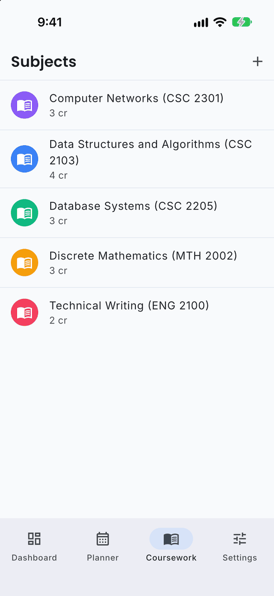
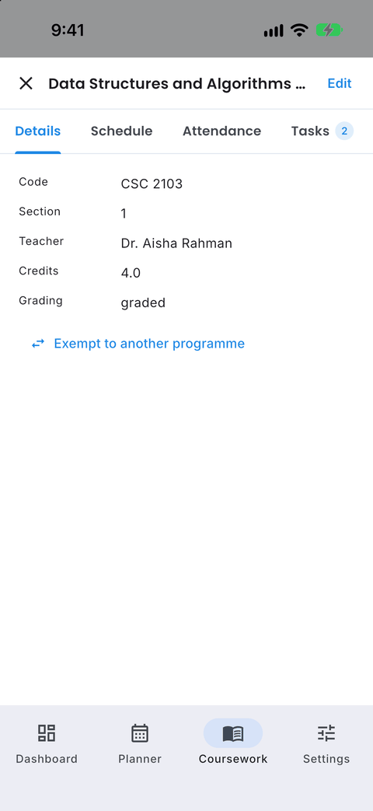
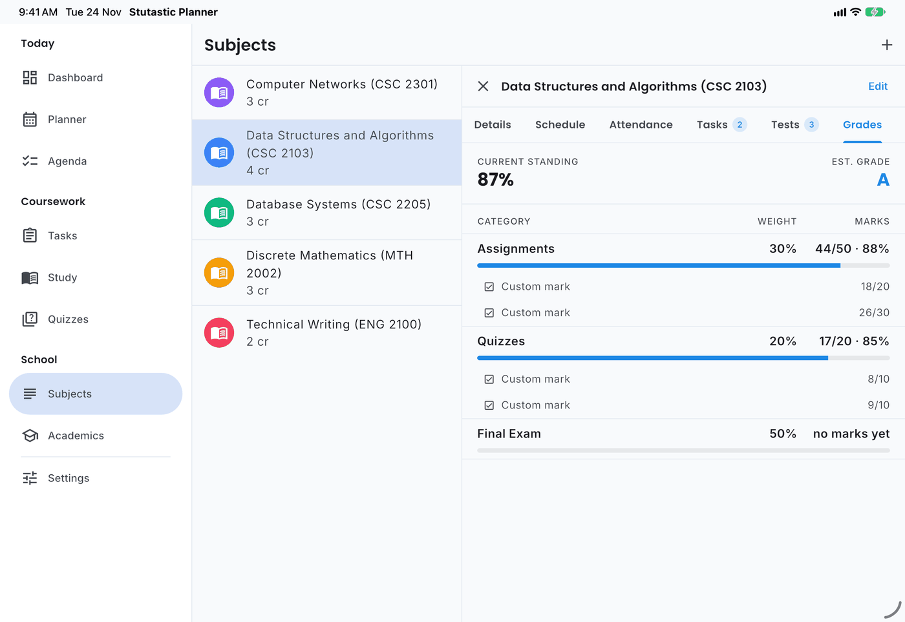
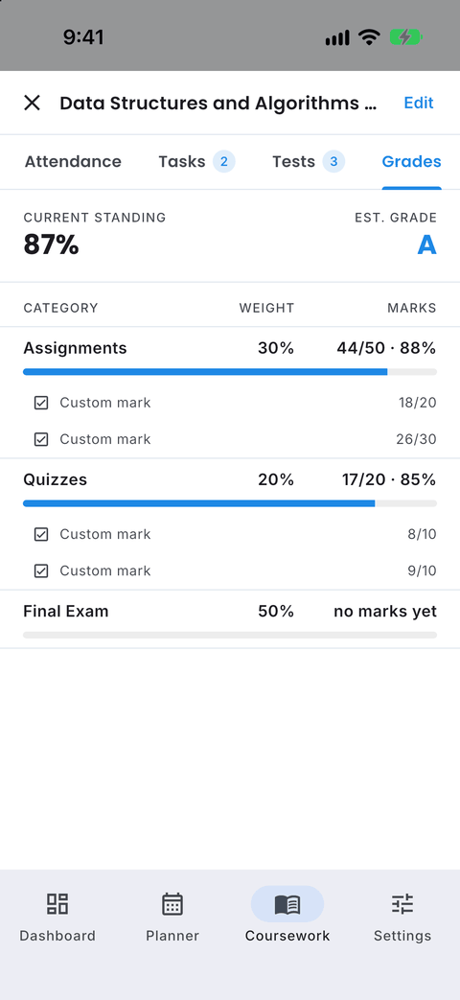
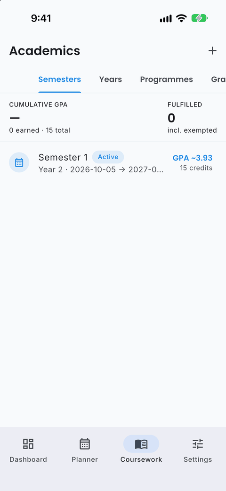
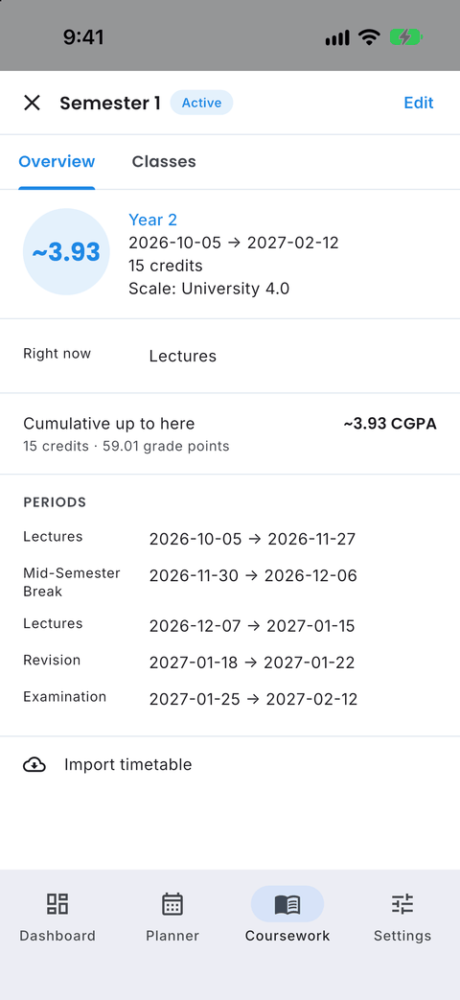

Subjects and academics¶
Your programme holds years, the years hold semesters, and each semester holds the subjects you take in it. Everything else in the app belongs to a subject, and your grades roll up into a semester GPA and a CGPA.
Subjects¶
Open Subjects to see this semester's subjects with their codes and credits. Tap one to open it.


A subject has six tabs:
| Tab | Shows |
|---|---|
| Details | Code, section, teacher, credits and how it's graded |
| Schedule | Its weekly classes |
| Attendance | How much you've missed, and every class so far with its mark. See Attendance |
| Tasks | Its tasks, with the number still open on the tab |
| Tests | Its quizzes, tests and exams |
| Grades | Your marks so far, your standing and the grade you're heading for |
On a tablet in landscape or a large window, the subject opens beside the list.

Add or edit a subject¶
Tap + on Subjects, or open a subject and choose Edit. Enter:
- Subject name and Code, such as "Data Structures and Algorithms" and "CSC 2103";
- Credits, which weight the subject in your GPA;
- Grading: Graded for a letter grade that counts toward your GPA, or Pass / Fail, Audit or Exempted for one that doesn't;
- Final grade, once you have it;
- optionally the Teacher and Section, and your own Warn at % and Barred at % lines for attendance.
Turn on Archived to hide a subject from the list while keeping its grade.
Marks and grades¶
The Grades tab works out where you stand before the final grade is in. Set it up once per subject, from Edit → Grades:
- Add category for each part of the assessment, such as Assignments, Quizzes and Final Exam, with its Weight (%), its share of the final grade. The weights should add up to 100.
- In each category, Add mark for each piece of work. Link a Quiz or Task to read its score from there, or choose Custom and type the Score and what it's Out of.

The tab then shows your Current standing, a percentage of the marks given so far, and the Est. grade it would earn on your grading scale. Categories with nothing in them yet, such as a final exam still to come, show no marks yet and don't count against you.
When the subject's final grade is set, its final exam's score is worked out from it.
Academics¶
Academics has four tabs: Semesters, Years, Programmes and Grading. The top shows your Cumulative GPA and the credits you've Fulfilled.


Semesters and periods¶
Open a semester for two tabs:
- Overview: its GPA, its credits and grading scale, Right now (which period you're in), the Cumulative up to here CGPA, and every period in the term.
- Classes: each subject in it with its credits and grade.
Choose Edit to change it, in two parts: Details (name, dates and grading) and Periods.
A semester's periods divide it up: lectures, break, revision, exam, holiday, or a custom period with your own name, such as an orientation week, and its own "classes run" and "counts as a teaching week" switches. Periods:
- number the teaching weeks in the Planner;
- stop classes on days in a break, exam or holiday period, and tint those days in the month view;
- set the Week A anchor date for alternating classes.
A new period starts where the last one ended, so you mostly adjust end dates and choose types.
The app opens on the semester that covers today, not the newest one you created, and tells you when you're looking at one that hasn't started yet or has already ended.
From your university's calendar¶
If your programme is at a university that publishes its academic calendar (IIUM does), the app can fill semesters in from it:
- A new semester: Fill from IIUM's calendar lists the calendar's semesters you don't have yet. Pick one and its name, dates and periods are filled in, and it's placed in your programme's year for that session.
- A semester you already have: its page shows Use IIUM's calendar dates with the calendar's dates. Tap it to see a summary of the dates and periods, then Use these dates. Close it if you'd rather keep your own; it won't ask again for that semester.
- When the university changes its calendar: a semester filled from it shows IIUM updated Sem 1, 2026/2027, on the dashboard and on the semester's page. Tap it to see what changed and Update, or close it to keep your dates.
Nothing changes until you accept. Your own edits to dates and periods stay yours.
Programmes¶
Most students have one programme. Add another for a second course of study, such as a minor or a programme change part-way through. Switching the active programme switches everything else in the app to that programme's semesters and subjects. A programme can set default grading for its new semesters.
Studying abroad? A programme can have its own time zone
If your programme is based somewhere other than where you are (an exchange semester, or a remote degree in another country), open the programme and set its time zone. Classes, tests and due times under it are entered in that time zone, shown in the time zone you're in, and reminded at the right moment. Leave it unset to use your device's time zone. See Time zones.
If you're exempted from a subject under another programme, such as a transfer credit, mark it from the subject's details with Exempt to another programme. Exemptions can be edited or removed later from that programme's own page.
Grading scales and GPA¶
Grading lists your grading scales: each grade, its points and its minimum percentage. A semester uses one scale, and your GPA and the Est. grade on each subject come from it.
As you enter grades, the app works out each semester's GPA and your CGPA.
\"~\" means an estimate
A GPA shown with a leading ~, such as ~3.81, still includes subjects without a final grade,
using their estimated grades. Once every subject in the semester has a final grade, the ~
goes.
If your university publishes its grading scale (IIUM does), Settings → Your university shows Use IIUM's grading scale when yours differs, for example a D worth 1.00 instead of 1.67. Tap it to see which grades change and use the university's points. Your semesters keep the scale they use, now with the right points.